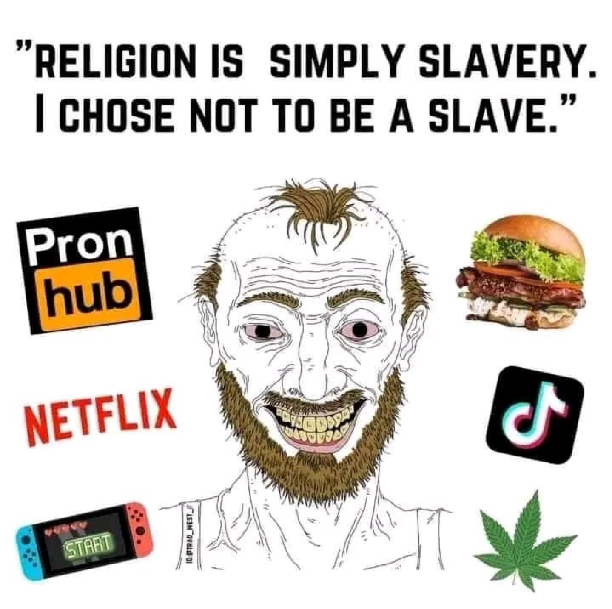

Back
Satan Complex
this writing more closely resembles a shitty essay than an informally written thought which wasn't my intention. oops
A dichotomy arises when a person or people gain a fanatical sort of belief in ideology, between the "good" and "evil" it describes. I can observe that, if that ideology is renounced, the opposite ideology takes hold, because if the previously-believed "good" isn't actually good, then surely the opposite is the right answer? Worse still is if the opposite belief takes hold due to anger with the ideology. Anecdotally, for example, I've heard of traditionalist Catholics leaving their faith and becoming hedonistic gooners. On a wider scale, note how it was Russia, a conservative society, that spawned Pussy Riot, how music videos from the historically-religious Brazil are basically softcore porn, how Prussia went from National Socialism to Stalinism to Liberalism in the span of less than 100 years, and how America is both the epicenter of far-right populism and the LGBT movement simultaneously.
I've been thinking about this recently, more often on the personal scale. My previous example about the ex-Catholic was only an extreme example - a case like that is pretty rare in real life. To myself, I call this the satan complex, where 'satan' is the enemy of an established worldview. It's far easier to critique the people on the spiteful side of the spectrum when it exists, but I think the dichotomy itself is a bad thing that's initially created by those on the 'good' old side. Maybe 'good' means fascism under Franco and 'satan' is drugs, pornography, and corruption. But if these evils were so fanatically repressed, like in Franco's Spain, what we are met with is some of the lowest weekly church attendance in Catholic Europe.
A common 'satan' in the west is almost literally that, satanism, or at least hedonism. You can do whatever the fuck you want, because you're free and no longer bound to the shackles of evil heckin bigoted religion! So jerk off all day, smoke weed, eat McDonald's, play video games, and collect Funko Pops. Or spend thousands of dollars on phone sex while you call people you don't like Nazis on twitter all day. Whatever it is, you're on the 'satan' side, and maybe even mock the thought of satanism, but you're there regardless. Similar to this is the Brazilian softcore porn example. The people who like this stuff aren't necessarily spiting heckin' evil religion, but there are certainly people who get off to how much it pisses off conservatives. I'd wager that Mark Potok, senior fellow at the SPLC, keeps a list on his wall showing the white population percentage decline as a result of his satan complex around white supremacists, rather than just a base hatred of white people. Taken by this 'satan', he either doesn't know or doesn't care that he's lending credence to far-right claims of white genocide and great replacement (those right-wingers themselves being on the other side of the complex).
Just as the hedonist is a Christian's 'satan', a natural hedonist might view Christianity as a 'satan'. The satan complex, then, is a natural result of ideology that is to some extent inevitable, although I think the worst, ugliest parts of it come out when ideas are followed too fanatically and in an unhealthy manner. Ultimately, I'd conclude that you should therefore be a bit more mellow about more things than you might be inclined to. Politics shouldn't be guided by ideology on every issue, but pragmatism. I've long thought that short-form videos, slop shows, porn, etc. are bad, but I shouldn't intend to throw out TV and internet and read books exclusively as a reactionary gesture to stick it to modern media. It's hard to describe it, but it's a sort of childish purism that I'm trying to get at. Things like Linux purism, the adherents of which often switch to using Mac. It's all so pointless. I admire Japan's political stability over America's divisiveness. If they support gay marriage, they won't hold orgies in the streets. If they oppose American military bases, they won't commit random hate crimes against Americans. This is something we should strive for, within reason.